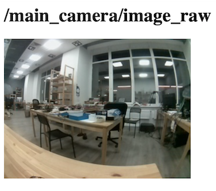

Просмотр изображений с камер
Для просмотра изображений с камер (или других ROS-топиков) можно воспользоваться rviz, rqt, или смотреть их через браузер, используя web_video_server.
См. подробнее про использование rqt.
Просмотр через браузер
Для просмотра видеострима нужно подключиться к Wi-Fi Technic (technic-xxxx), перейти на страницу http://10.42.0.1:8080/ и выбрать топик.

Если передача картинки работает слишком медленно, можно ускорить ее, указав тип передаваемых данных mjpeg и меняя GET-параметр quality (от 1 до 100), который отвечает за сжатие видеострима, например:
http://10.42.0.1:8080/stream_viewer?topic=/main_camera/image_raw&type=mjpeg&quality=1
По URL выше будет доступен стрим с основной камеры в минимальном возможном качестве.
Также доступны параметры width, height и другие. Подробнее о web_video_server: http://wiki.ros.org/web_video_server.
Просмотр через rqt_image_view
Для просмотра изображений через инструменты rqt необходим компьютер с установленной Ubuntu 20.04 и ROS Noetic.
Подключитесь к Wi-Fi сети Technic и запустите rqt_image_view с указанием его IP-адреса:
ROS_MASTER_URI=http://10.42.0.1:11311 rqt_image_view
Выберите топик для просмотра, например, /main_camera/image_raw
Для снижения нагрузки на сеть и уменьшения задержки используйте сжатый вариант топика – /main_camera/image_raw/compressed.
Для изменения настроек сжатия используйте rqt-плагин Dynamic Reconfigure.